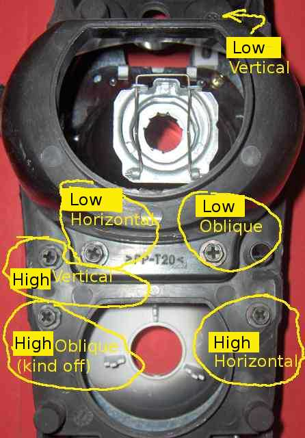
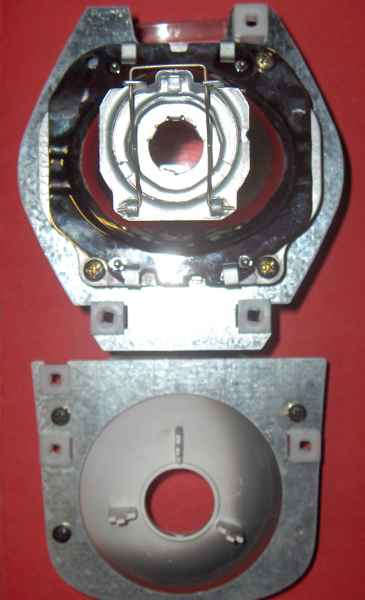
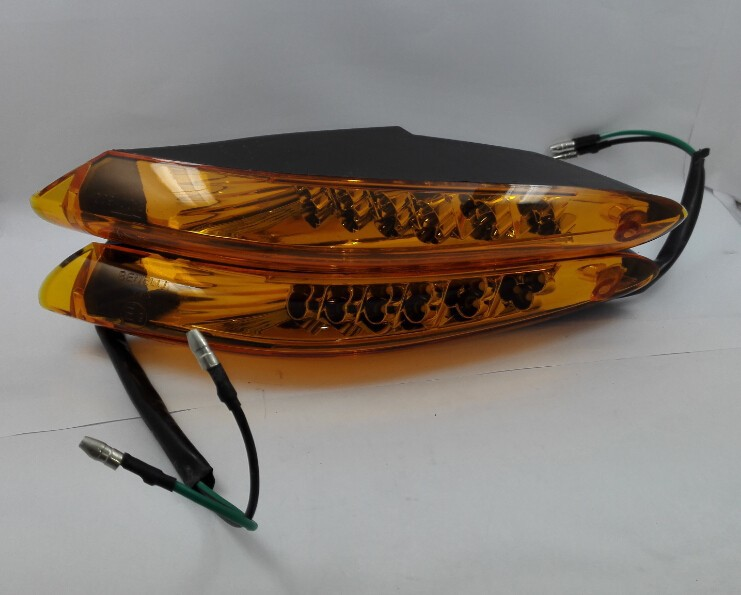

Front Head Lamps
H7 12V 50W Halogen
Adjustment
The lamp assemblies are held in place by 3 screws each. Each screw affects the beam direction in some way. The one in the corner will affect both horizontal
and vertical directions, hence oblique. You really don't want to touch that one, unless you are running out of screw thread on one of the others,
and that's unlikely.
The pics should be self explanatory
|  |  |
| The adjusters (this headlight is dismantled , yours will look a little different) |
The 2 lamp modules, viewed from the rear Note the 3 nylon 'nuts', that engage the screw adjusters. |
One other thing. When assembled, the 2 lamp modules overlap by 10 mm or so. The picture on the right doesn't show this, but the high vertical adjusting screw is in line with the low horizontal & oblique screws.
Front Indicators
These are the same units on the Tornado and TNT. They use standard 5W T10 wedge incandescent bulbs.
The Benelli 49X scooter has the same indicator unit but employs amber LEDs instead, so a clear or smoked lense could be used with it.
